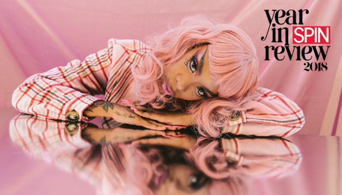
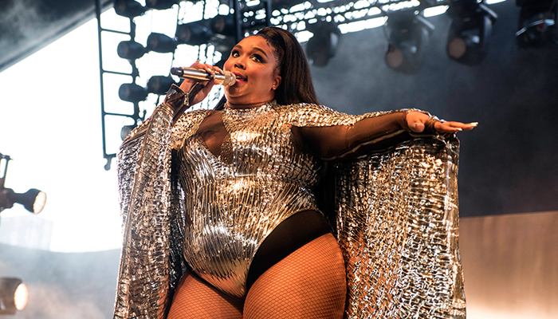
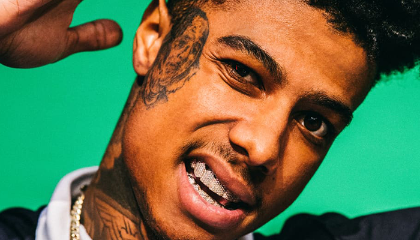

The best interviews, deep dives, and thinkpieces.
Who's Billie Eilish? -The FADER
Billie Eilish — Eilish being one of her middle names, the other one being, yes, Pirate — is sitting quietly in the corner of it all. Quietly because her head is fully inside of a ziploc bag, which I am told by the styling team is designer, because apparently a designer ziploc bag is a thing... Read More
Rico Nasty Is So Tired of That Damn Box -SPIN
When her debut mixtape Summer’s Eve came out in 2014, Rico Nasty was still a high school student in Prince George’s County, Maryland. Since then, the artist born Maria Kelly has steadily pushed her style and taste to new boundaries: She coined the concept of “sugar trap,” combining playful, candy-coated rhymes full of nostalgic references to cartoons like Rugrats and Hey Arnold with hard-edged trap production... Read More
Lizzo Wants to Build You Up -NY Times
Four hours before showtime at MoMA PS1 Warm Up, Lizzo was stressing about whether anyone in the crowd would know the lyrics to her songs. “I have to fake it until I make it,” the artist said backstage. “You just have to gas yourself up. It takes a lot of work.” Lizzo, born Melissa Jefferson, has made that kind of self-aggrandizement the mission of her work... Read More
A Conversation with Tay Keith, the Best Hip-Hop Producer of 2018 -Complex
Tay Keith had a monster 2018, emerging from Memphis to produce some of the year’s defining hits, including Drake’s “Nonstop,” Travis Scott’s “Sicko Mode,” and BlocBoy JB’s “Look Alive.” With a Grammy nomination and college degree in hand, he has now earned the distinction as Complex’s Best Hip-Hop Producer Alive in 2018. Naturally, the 22-year-old isn’t content with all the accolades... Read More
Blueface, G Herbo, & the Sudden Resurgence of the Offbeat Flow -Stereogum
Does Blueface know how to rap? As in: Is he even capable of it? That’s been the question that’s followed the 22-year-old LA rapper since he started blowing up a couple of months ago. This isn’t a question of people not liking Blueface’s rap style, or wondering why younger generations of rap always stick with derivative subject matters, or any of the usual complaints that people hurl at young rappers as they’re first getting famous... Read More